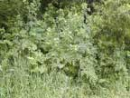
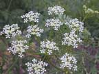
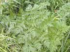
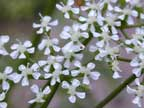
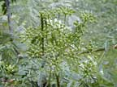
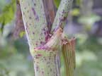
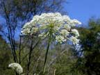

Hemlock
Conium maculatum
Other names
Description
A biennial of the parsley family which grows up to 3m tall. Stems are ridged, branching, hollow and usually flecked with purple. Leaves are pinnate (3 5 times) and lanceolate. Hemlock has a white fleshy tap root. Flowers are white and compressed in umbrels of numerous rays. Fruit has prominent ridges. The whole plant has a musty smell.
Similar plants
Most umbellifers are similar but the red spotted stems of hemlock are distinctive.
Distribution
Common in New Zealand. Grows in waste areas, roadsides and gardens.
Toxin
Pyridine and piperidine alkaloids coniine and gamma coniceine. These depress autonomic ganglia and motor end plates in skeletal muscle resulting in paralysis, nervous trembles and incoordination. This paralysis may progress to give a reduced heart rate and respiratory paralysis and can cause death by asphyxia. Convulsions occur with large doses. Coniine is also teratogenic. All parts of the plant are poisonous. Roots have the lowest alkaloid concentration with seeds the highest. Larger amounts of alkaloids are present in the plant in the second year of growth. Drying reduces toxicity.
Species affected
Grazing animals, particularly cattle. Children are sometimes poisoned.
Clinical signs acute
Usually seen in spring within a few hours of eating plant. Salivation, diarrhoea, fever, bloat and muscle weakness leading to convulsions. Irregular respiration leading to respiratory failure and death. In man a small quantity of hemlock can cause poisoning, with symptoms appearing in 15 minutes to two hours. Initially there is a burning and dryness of the mouth, followed by muscular weakness leading to paralysis that eventually affects the breathing. There may also be dilatation of the pupils, vomiting, diarrhoea, convulsions, and loss of consciousness.
Clinical signs chronic
Birth defects in calves and piglets. Milk taint in dairy cows.
Post mortem signs
Non specific inflammation of the gastrointestinal tract and congestion of abdominal organs and signs of asphyxia.
Diagnosis
History, clinical signs, leaves in rumen/stomach.
Differential diagnosis
Treatment
Following the administration of purgatives to remove the poison from the intestine, tannic acid may be given in an attempt to neutralise the ingested alkaloids. Alternatively activated charcoal and a saline cathartic may be administered. Diazepam may be necessary to control convulsions.
Prognosis
Poor. Most poisonings are fatal. If the animal lives for 8 hrs following ingestion it may recover. Pregnant animals may abort.
Prevention
Do not allowed hungry livestock to graze areas where plants are growing.
References
Conner H.E. The Poisonous Plants In New Zealand. 1992. GP Publications Ltd, Wellington
Dreisbach RH. Handbook of Poisoning. 1980. Pg. 491 492
Munday B.L. Morris D.I. Tasmanian Plants Toxic to Animals. 1986 Pg. 11 12, 57.
Cooper M.R. Johnson A.W. Poisonous Plants of Britain and Their Effects On Animals and Man. Pg. 229 232, 239, 240.
Parton K, Bruere A.N. and Chambers J.P. Veterinary Clinical Toxicology, 2nd ed. 2001. Veterinary Continuing Education Publication No. 208
Keeler, R.F., Balls, L.D., Shupe, J.L. and Crowe, M.W. (1980). Teratogenicity and Toxicity of coniine in cows, ewes and mares. Cornell Veterinarian, 70:19 26.
Surveillance (1976) 3(3): 16 Hemlock poisoning (sheep).
Surveillance (1996) 23(1): 19 Hemlock poisoning (sheep).
|
 |
 |
|
|
 |
 |
|
|
 |
 stems |
|
|
 |
|
|